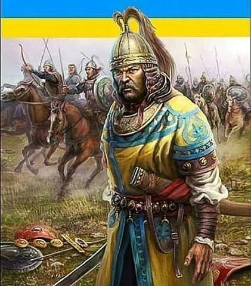
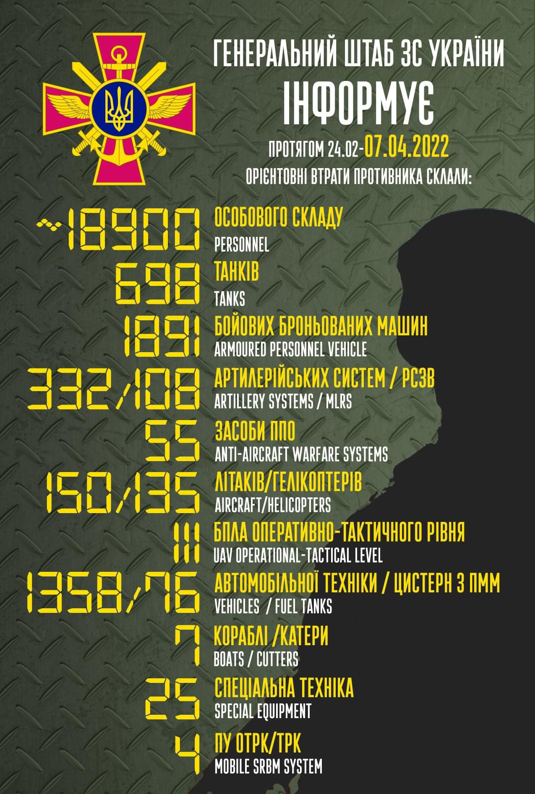
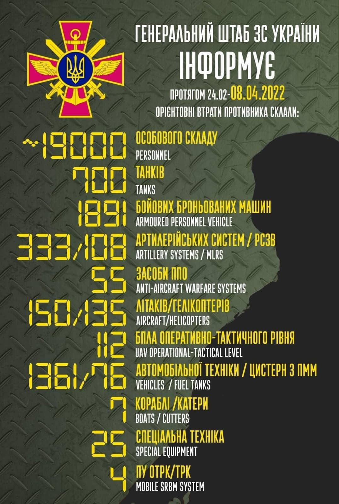

15:36 05.04.2022 р.
Історичне поняття "хохол" - з тюркського "син божий", тобто степовик-християнин часів Орди, а виглядав "хохол" саме так. І ще один переклад з тюркського - "син сонця". Існує й інша версія, по ній назву отримали древні русичі від монголів за жовто-блакитні прапори.
"Хохол" - походить від татарського “хох оллу” — “блакитножовтий”, або за іншою версією - “хох оллу” можна тлумачити і як “син неба”. Ще існує і такий варіант: “хохол — коколь" (від тібетського походження), означає: вінець, корона, навершя”.

У липні 971 року великий князь Русі Святослав та візантійський імператор Цимісхій зустрілися на березі Дунаю. З ними був Історик Лев Диякон Калойський, і залишив такий портрет київського князя Святослава. Був він: "Помірного зросту, не дуже високого і не дуже низького, з кошлатими бровами та світло-синіми очима, кирпатий, і без бороди, з густим надмірно довгим волоссям над верхньою губою (вусами).
Голова в нього була зовсім гола, але з одного її боку звисало пасмо волосся — ознака знатності роду (оселедець). Міцна потилиця, широкі груди і інші частини тіла цілком пропорційні. Виглядав він досить суворим і диким. В одне вухо в нього було протягнуто золоту сережку, що прикрашена золотим карбункулом, і ще обрамленим двома перлинами. Одяг його був білий і відрізнявся від одягу інших воїнів лише чистотою”.
Оселедець, як ознаку знатності роду, носив не лише Святослав. “На старовинних книжкових мініатюрах і фресках зустрічається зачіска, яка нагадує український оселедець. Це довге пасмо волосся, що звисає з одного боку. Можливо, це була зачіска князів”. У IX ст., династія Каролінгів - франкські воїни носили зачіску, що нагадувала український оселедець.
Треба тут сказати, що в середньовічній Європі християнська церква виступала проти звичаю “вирощувати на обличчі щетину”. Як бачимо з опису вигляду князя Святослава, він не носив бороди. Не носили бороди ні Хмельницький, ні Мазепа, ні інші гетьмани. Взагалі, українські селяни, як і польські, німецькі, французькі і т. д., на відміну від російських, не носили бороди...
Дотримуючись княжої військової традиції, запорожці, так само як Святослав, голили голову і бороду, залишаючи вуса і чуприну.
Як розповідали Д. Яворницькому старі люди, які пам’ятали козаків: “дівчата коси кохають, а запорожці чуприни”.
”. На підставі численних зображень та величезної кількості описів, докладно відомо, як виглядав знак воїна — оселедець (козацька чуприна): “Вся голова голилась чи стриглась при тілі, над самим же лобом зіставалося кругле пасмо волосся пальців у три ширини. Волосся те часом відростало у довгу косу, котру можна було, зачесавши на лівий бік, або обнести кругом і замотати за ліве ухо, або просто довести до нього і замотати. Частіше, коли вона була не дуже довга, тільки спускалась за вухо, і її кінець теліпався на плечі. Така коса надавала лицю дуже войовничий вид і оригінальну красу”.
P.S. Ми - "Сини/доньки короновані Небом"
19:31 07.04.2022 р.
Вчора зробив плов, але як плов, без спецій та часнику, ось такий плов. В магазинах деякі продукти почали з’являтися, але спеції та деяких продуктів ще немає.
Використання протитанкової ракети.
Сьогодні був у матері, полив в теплиці редьку, помідори, які ми посадили в теплиці. Помив велосипеда, привів в порядок. В нашому місті краще велосипеда немає нічого. 15 – 30 хвилин і ти в любій точці міста. Наприклад дорога від Світланиної квартири до дому моєї матері це 3,5 кілометра десь 15 хвилин на велосипеді. В нашому місті є велодорожки. Також на дорогах є велорозмітка. Так що велосипед самий зручний транспорт в нашому місті.
Сьогодні дзвонила Світлана Данильченко, та повідомила, що з Діаною, своєю дочкою вони спілкуються по телефону, вона жива, здорова. Що ведеться робота, може скоро повернуть Діану додому. Також Світлана повідомила, що можливо скоро здадуть мою квартиру орендарям, тож можливо у мене буде трохи грошей на життя, бо в Києві, де я працював фірма поки не працює, і я в відпусці за свій рахунок. Роботи в нашому місті немає, по будівництву теж роботи немає, так що з заробітків тільки здавати в оренду свою квартиру. Добре що я отримав допомогу від держави через «Дію». То трохи закрив кредит. Байдуже що зараз проценти по кредиту не треба платити, треба закривати кредит, задля банківської системи.
Алкоголь в Київській області під забороною. Але люди десь його беруть, сьогодні бачили хмільного сусіда. Як люди не розуміють, що якщо щось насправді станеться, то вони будуть неспроможні щось зробити для свого порятунку. Хоча я б з жінкою теж би трохи випив би, щоби зняти напругу. Ця війна з новинами дуже давить на психіку. Ми стараємось відволікатись, займаємось своїми справами. Я наприклад пишу свій щоденник. Також читаю книжки у вільний час. Ще граю в шахи з сином по мережі. Жінка дивиться фільми по мережі на телевізорі, також довоєнні передачі.
58 БМП-1 со складов Германии отправлены в качестве военной помощи Украине. Також Германія допомагає гуманітарною допомогою, та засобами захисту військовим.

Загальні бойові втрати противника з 24.02 по 07.04 орієнтовно склали
/ The total combat losses of the enemy from 24.02 to 07.04 were approximately:
особового складу / personnel - близько/ about 18900 осіб,
танків / tanks ‒ 698 од,
бойових броньованих машин / APV ‒ 1891 од,
артилерійських систем / artillery systems – 332 од,
РСЗВ / MLRS - 108 од,
засоби ППО / Anti-aircraft warfare systems - 55 од,
літаків / aircraft – 150 од,
гелікоптерів / helicopters – 135 од,
автомобільної техніки / vehicles - 1358 од,
кораблі /катери / boats / cutters - 7 од,
цистерн з ПММ / fuel tanks - 76,
БПЛА оперативно-тактичного рівня / UAV operational-tactical level - 111.
Спеціальна техніка / special equipment - 25.
Пускові установки ОТРК/ТРК / mobile SRBM system - 4.
Дані уточнюються. Підрахунок ускладнюється високою інтенсивністю бойових дій.
/ Data are being updated. The calculation is complicated by the high intensity of hostilities.
Бий окупанта! Разом переможемо!
Strike the occupier! Let's win together!
10:29 08.04.2022 р.
Тільки що над нашим містом збили ракету. В деяких районах міста чули вибух, це збили таки ракету над нашим містом. Тарас пройшовся містом бачив дим. Але той дим скоро розвіявся. В укриття ми вже не спускаємось давно, мабудь через те що до нього треба ще добігти, та й ми з жінкою вирішили, що буде то буде. Та й продовжуємо займатись своїми справами.
Я сиджу пишу свій сайт по записам мого діда, який воював у вітчизняну війну, та ще декілька сайтів.
В хаті немає гарячої води, зламався бойлер, а полагодить, визвати майстра – немає грошей.
Іноді ми з жінкою дивимось передачі по youtube, як в чат рулетці українські блогери спілкуються з росіянами, росіян можна описати одним висловом – Боже яке кончене. Але після того як весь світ дізнався про злочини росіян в Київській області, риторика росіян змінилася, вони шукають якісь виправдання, в них вже нема того гонору який був раніше.
11:05 08.04.2022 р.

Загальні бойові втрати противника з 24.02 по 08.04 орієнтовно склали
/ The total combat losses of the enemy from 24.02 to 08.04 were approximately:
особового складу / personnel - близько/ about 19000 осіб,
танків / tanks ‒ 700 од,
бойових броньованих машин / APV ‒ 1891 од,
артилерійських систем / artillery systems – 333 од,
РСЗВ / MLRS - 108 од,
засоби ППО / Anti-aircraft warfare systems - 55 од,
літаків / aircraft – 150 од,
гелікоптерів / helicopters – 135 од,
автомобільної техніки / vehicles - 1361 од,
кораблі /катери / boats / cutters - 7 од,
цистерн з ПММ / fuel tanks - 76,
БПЛА оперативно-тактичного рівня / UAV operational-tactical level - 112.
Спеціальна техніка / special equipment - 25.
Пускові установки ОТРК/ТРК / mobile SRBM system - 4.
Дані уточнюються. Підрахунок ускладнюється високою інтенсивністю бойових дій.
/ Data are being updated. The calculation is complicated by the high intensity of hostilities.
Бий окупанта! Разом переможемо!
Strike the occupier! Let's win together!
Генеральний штаб ЗСУ / General Staff of the Armed Forces of Ukraine
13:00 08.04.2022 р.
Тільки що повідомили, що ракета «Іскандер» попала у вокзал залізничний у Краматорську. Загинуло п'ятдесят людей серед них п'ятеро дітей. На ракеті був напис «За дітей». Це виходить, окупанти натворили лиха в містах України, гвалтували та вбивали дітей, а тепер мстять нам за наших же дітей. Як то кажуть «Боже яке кончене». Або «Маразм крепчал - дерева гнулись».
Оперативна ситуація російського вторгнення станом на 06:00 8 квітня Окупанти намагаються захопити Попасну, Нижнє, Новотошківське, Золоте, Борівське та Рубіжне, встановити контроль у Маріуполі та продовжують блокувати Харків
На Харківському напрямку для недопущення просування наших військ загарбники ставлять мінно-вибухові загородження
Збройні сили Білорусі проводять тактичні навчання на полігонах по всій території країни, також з числа білорусів формується приватний добровольчий батальйон
Ворог обстрілює цивільну інфраструктуру, зокрема й із застосуванням реактивних систем залпового вогню на Донбасі та у Харківській області В тимчасово загарбаному Ізюмі представники ОРДЛО виконують функції місцевої «поліції», незаконно перевіряють документи, обшукують людей та приміщення місцевого населення
За попередню добу українські військові знищили 4 танки, 2 артилерійські системи, 10 од. броньованої та 11 од. автомобільної техніки ворога
Оперативна інформація станом на 18.00 09.04.2022 щодо російського вторгнення
Триває сорок п’ята доба героїчного протистояння Українського народу російському воєнному вторгненню.
Російська федерація продовжує повномасштабну збройну агресію проти нашої Держави. Ворог й надалі проводить підготовчі заходи з метою активізації наступальних дій на сході України для встановлення повного контролю над територіями Донецької та Луганської областей.
Основні зусилля окупантів зосереджуються на захопленні Маріуполя та наступі в районі міста Ізюм. Залишається високою ймовірність залучення противником диверсійно-розвідувальних груп для здійснення диверсій на об’єктах транспортної інфраструктури.
Ворог продовжує завдавати ракетних ударів по цивільних об’єктах на всій території України.
На Волинському, Поліському та Сіверському напрямках суттєвих змін у складі та положенні військ противника не зафіксовано.
На Слобожанщині противник продовжує здійснювати часткове блокування міста Харкова. З метою прихованого пересування окупаційних підрозділів по території Харківської області ворог здійснює радіоелектронне придушення мереж стільникового зв’язку. З метою нарощування угруповання військ, з Бєлгородської області у район Шевченкового Харківської області переміщено до двох батальйонних тактичних груп противника.
На Донецькому напрямку ворог продовжує штурмові дії. Основні зусилля окупантів зосереджені на взятті під контроль населених пунктів Рубіжне, Попасна та Новобахмутівка. Разом з тим, загарбники продовжують завдавати авіаційних ударів по населених пунктах Вугледар і Новоселівка Друга. Намагаються відновити наступ в районах Новотошківського, Степного і Мар’їнки.
На Південнобузькому напрямку окупанти не полишають спроб утримати позиції та рубежі на адміністративному кордоні Херсонської області
Українські захисники та захисниці тримають оборону і поступово відтісняють ворожі війська на окремих напрямках.
13:20 10.04.2022 р.
Загальні бойові втрати противника з 24.02 по 10.04 орієнтовно склали
/ The total combat losses of the enemy from 24.02 to 10.04 were approximately:
особового складу / personnel - близько/ about 19300 осіб,
танків / tanks ‒ 722 од,
бойових броньованих машин / APV ‒ 1911 од,
артилерійських систем / artillery systems – 342 од,
РСЗВ / MLRS - 108 од,
засоби ППО / Anti-aircraft warfare systems - 55 од,
літаків / aircraft – 152 од,
гелікоптерів / helicopters – 137 од,
автомобільної техніки / vehicles - 1384 од,
кораблі /катери / boats / cutters - 7 од,
цистерн з ПММ / fuel tanks - 76,
БПЛА оперативно-тактичного рівня / UAV operational-tactical level - 112.
Спеціальна техніка / special equipment - 25.
Пускові установки ОТРК/ТРК / mobile SRBM system - 4.
Дані уточнюються. Підрахунок ускладнюється високою інтенсивністю бойових дій.
/ Data are being updated. The calculation is complicated by the high intensity of hostilities.
Оперативне зведення на ранок 10 квітня:
Ворог намагається прорватися в районі Ізюму, захопити Маріуполь та покращити своє положення на Миколаївському напрямку.
У зв’язку зі значними втратами особового складу та техніки загарбники розгорнули військові шпиталі та ремонтні майстерні на тимчасово зайнятих територіях Харківської, Запорізької і Херсонської областей.
Ворогу не вистачає кваліфікованого медичного персоналу та ліків.
У Новій Каховці окупанти використовують місцеві типографії
для підготовки агітаційних матеріалів для проведення так званого «референдуму щодо створення Херсонської народної республіки».